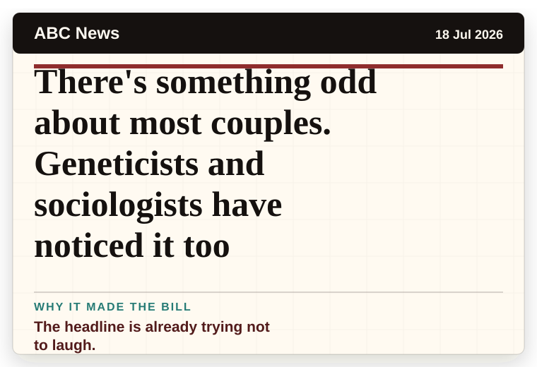
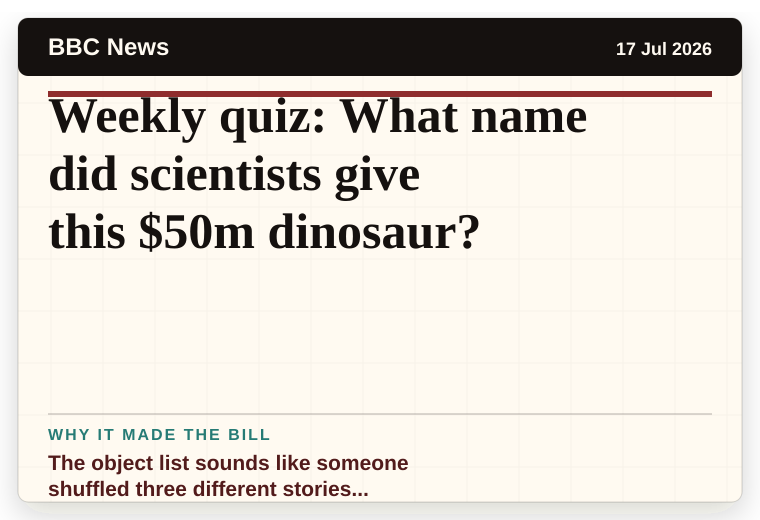
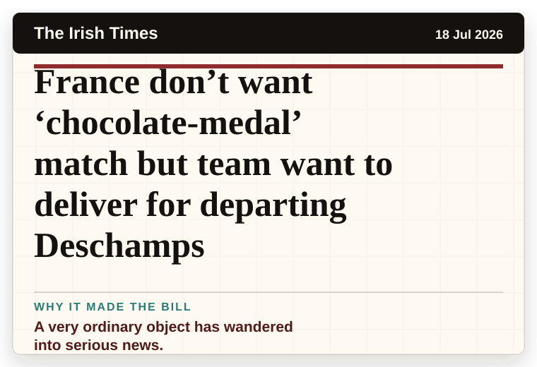
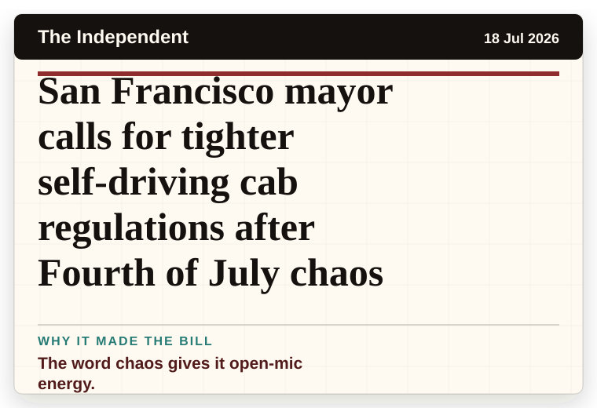
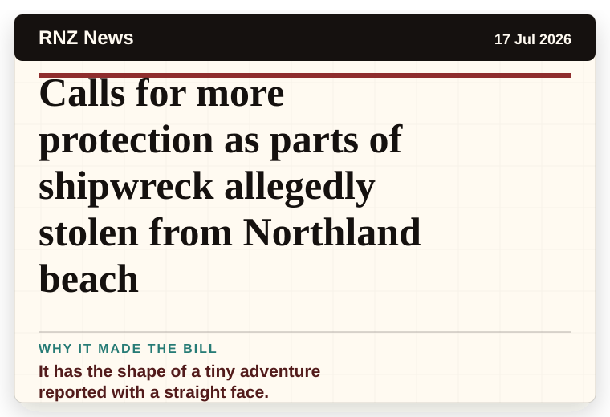
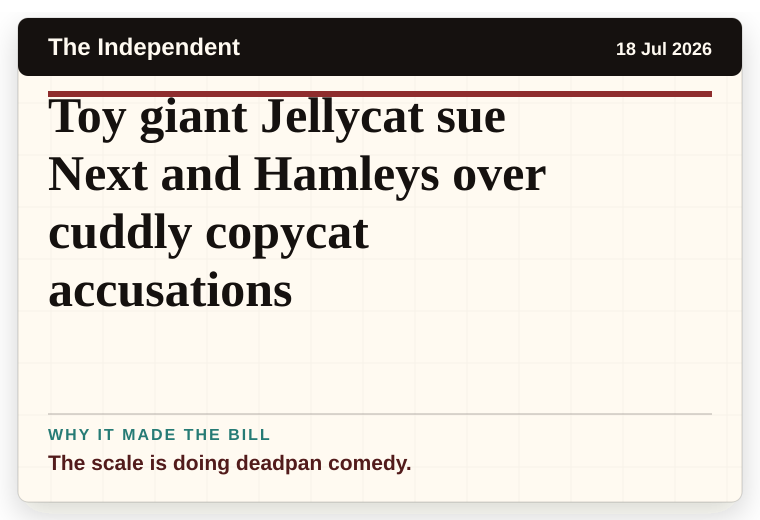
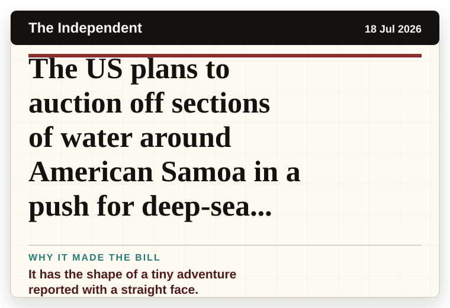

NT News
Australia
Kamala tells WNBA stars to ‘keep doing what you’re doing’ in bizarre speech
The headline is already trying not to laugh.
The latest daily picks, linked back to the original sources. Search the room, pick a source, or follow a headline out to the full story.
Record updated: 18 Jul 2026, 07:51 AM AEST
Showing 19 headline candidates from the refresh run completed on 18 Jul 2026, 07:51 AM AEST.
The headline is already trying not to laugh.

The headline is already trying not to laugh.

It has the shape of a tiny adventure reported with a straight face.

A household object has somehow reached the news desk.

It has the shape of a tiny adventure reported with a straight face.

A wonderfully specific detail has taken centre stage.

A very ordinary object has wandered into serious news.

A mystery is doing a lot of work in a very small sentence.

The scale is doing deadpan comedy.

The headline is already trying not to laugh.

The object list sounds like someone shuffled three different stories together.

A very ordinary object has wandered into serious news.

The word chaos gives it open-mic energy.
It has the shape of a tiny adventure reported with a straight face.

The word chaos gives it open-mic energy.

It has the shape of a tiny adventure reported with a straight face.
The scale is doing deadpan comedy.

The scale is doing deadpan comedy.

It has the shape of a tiny adventure reported with a straight face.